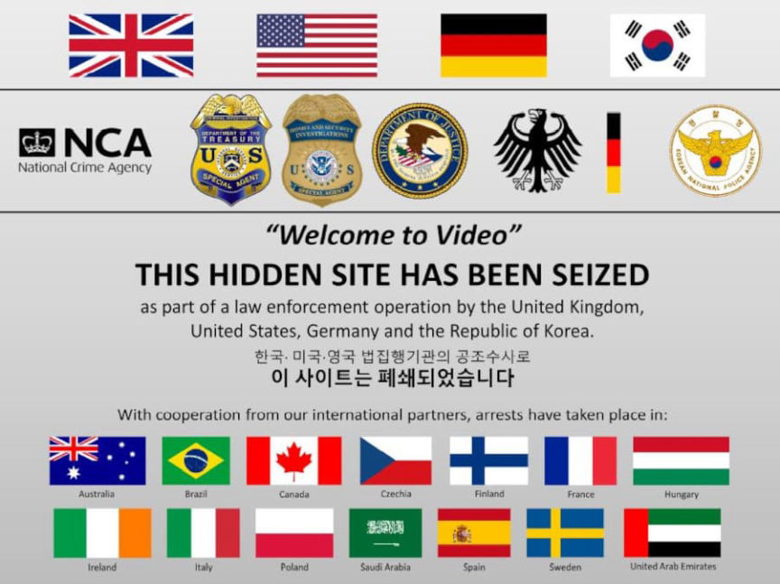
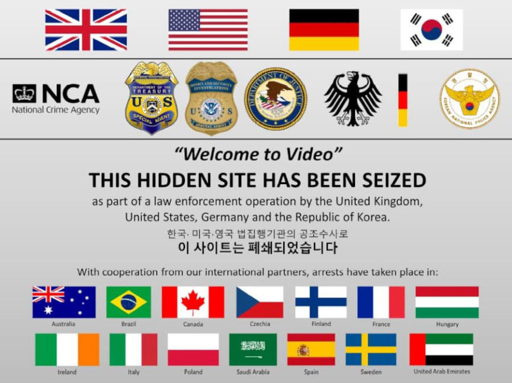

Welcome To Video Admin Sentenced to Prison for Two Years
The administrator of one of the “world’s largest child pornography websites” was sentenced to two years in prison for hiding proceeds from the forum.
Son Jong-woo, the convicted operator of the Welcome To Video forum on the darkweb, was sentenced to five years in prison for concealing about 400 million won ($305,000). The money came from users of Son’s forum who spent Bitcoin to access child sexual abuse material (CSAM).
The defendant has already served an 18-month sentence for violating child protection laws. A grand jury in the United States returned an indictment, accusing Son of:[list]*Conspiracy to Advertise Child Pornography;*Advertising Child Pornography;*Production of Child Pornography for Importation to the United States;*Conspiracy to Distribute Child Pornography;*Distribution of Child Pornography; and*Money Laundering.[/list]
Before Son completed his sentence, his father filed a criminal complaint against him for “violation of the law on criminal proceeds concealment.” The move was interpreted as an attempt to prevent Son’s extradition to the United States.

The Seoul High Court blocked Son’s extradition because Son’s cooperation would assist authorities in investigating “sexually exploitative content.” Authorities then filed new charges against Son, including criminal proceeds concealment and gambling with the concealed proceeds.
The Korean National Police in South Korea arrested Son on March 5, 2018. Agents from the IRS-CI, HSI, and National Crime Agency in the United Kingdom seized the servers Son had used to host the onion service. The operation resulted in the seizure of eight terabytes of CSAM. A Department of Justice press release revealed that 45% of the 250,000 unique videos seized by police contained new images.
“Welcome To Video offered these videos for sale using the cryptocurrency bitcoin. Typically, sites of this kind give users a forum to trade in these depictions. This Darknet website is among the first of its kind to monetize child exploitation videos using bitcoin. In fact, the site itself boasted over one million downloads of child exploitation videos by users. Each user received a unique bitcoin address when the user created an account on the website. An analysis of the server revealed that the website had more than one million bitcoin addresses, signifying that the website had capacity for at least one million users.”
“The agencies have shared data from the seized server with law enforcement around the world to assist in identifying and prosecuting customers of the site. This has resulted in leads sent to 38 countries and yielded arrests of 337 subjects around the world. The operation has resulted in searches of residences and businesses of approximately 92 individuals in the United States. Notably, the operation is responsible for the rescue of at least 23 minor victims residing in the United States, Spain and the United Kingdom, who were being actively abused by the users of the site.”
South Korean man jailed over proceeds from child porn site, Yonhap reports | archive.is, archive.org, reuters.com
Son Jong-woo, the convicted operator of the Welcome To Video forum on the darkweb, was sentenced to five years in prison for concealing about 400 million won ($305,000). The money came from users of Son’s forum who spent Bitcoin to access child sexual abuse material (CSAM).
The defendant has already served an 18-month sentence for violating child protection laws. A grand jury in the United States returned an indictment, accusing Son of:[list]*Conspiracy to Advertise Child Pornography;*Advertising Child Pornography;*Production of Child Pornography for Importation to the United States;*Conspiracy to Distribute Child Pornography;*Distribution of Child Pornography; and*Money Laundering.[/list]
Before Son completed his sentence, his father filed a criminal complaint against him for “violation of the law on criminal proceeds concealment.” The move was interpreted as an attempt to prevent Son’s extradition to the United States.

The 'Welcome to Video’ seizure banner uploaded by law enforcement.
The Seoul High Court blocked Son’s extradition because Son’s cooperation would assist authorities in investigating “sexually exploitative content.” Authorities then filed new charges against Son, including criminal proceeds concealment and gambling with the concealed proceeds.
The Korean National Police in South Korea arrested Son on March 5, 2018. Agents from the IRS-CI, HSI, and National Crime Agency in the United Kingdom seized the servers Son had used to host the onion service. The operation resulted in the seizure of eight terabytes of CSAM. A Department of Justice press release revealed that 45% of the 250,000 unique videos seized by police contained new images.
“Welcome To Video offered these videos for sale using the cryptocurrency bitcoin. Typically, sites of this kind give users a forum to trade in these depictions. This Darknet website is among the first of its kind to monetize child exploitation videos using bitcoin. In fact, the site itself boasted over one million downloads of child exploitation videos by users. Each user received a unique bitcoin address when the user created an account on the website. An analysis of the server revealed that the website had more than one million bitcoin addresses, signifying that the website had capacity for at least one million users.”
“The agencies have shared data from the seized server with law enforcement around the world to assist in identifying and prosecuting customers of the site. This has resulted in leads sent to 38 countries and yielded arrests of 337 subjects around the world. The operation has resulted in searches of residences and businesses of approximately 92 individuals in the United States. Notably, the operation is responsible for the rescue of at least 23 minor victims residing in the United States, Spain and the United Kingdom, who were being actively abused by the users of the site.”
South Korean man jailed over proceeds from child porn site, Yonhap reports | archive.is, archive.org, reuters.com